There’s a little-known waterfall in the Twin Cities, flowing down from the high river bluffs into the Mississippi. It’s called Ivy Falls, and it isn’t found on any maps.
The 25-foot spring-fed waterfall in Mendota Heights was once under consideration to become a state park, but is now all but unknown to most residents of the Twin Cities.
If you’re like me, sometimes you procrastinate by looking at maps. One day while procrastinating, I remembered something Josh Feinberg, a geology professor at the University of Minnesota, told me one spring afternoon in 2020, while we were out collecting water samples from a natural spring on the South banks of the Mississippi, across from campus.
“So before, there used to be sediment that went all the way across the river,” he said. “And the surface was much higher, there were pre-existing rocks above where the river is now. So as the river eroded down, there are sometimes features that used to be connected with one another in space.”
Because of a geological pattern called jointing, spring-fed waterfalls on the Mississippi in the Twin Cities are often found on opposite sides of the river from each other, flowing down the path of least resistance created by fractures in the layers of rock.
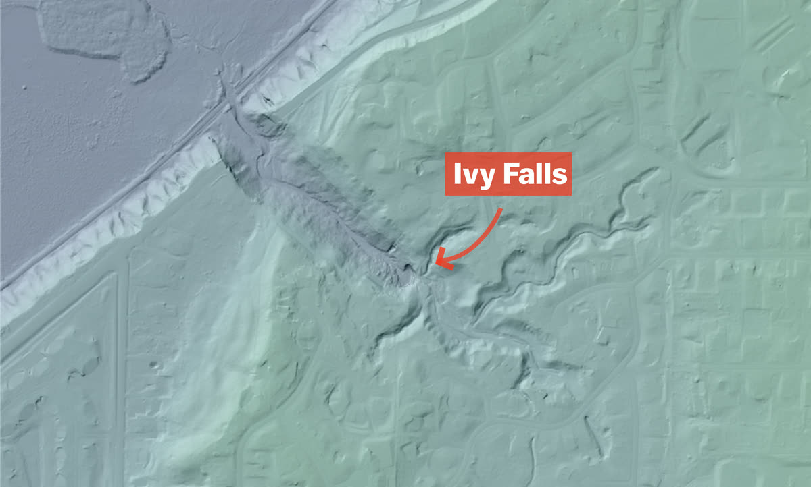
Half-remembering what he told me years later, I bounced back and forth between the banks of the Mississippi on Google Maps, looking at the locations of marked waterfalls and the points directly across. I eventually landed on a spot that looked like it should have a waterfall, but found nothing marked.
A quick look at a topographical map showed there was something there.
Reaching Ivy Falls takes about 45 minutes on foot starting at the Lilydale Trailhead, located on the flats of the Mississippi, about a 15-minute drive from Downtown Minneapolis. The town that once resided on this floodplain relocated to the bluffs overlooking the river due to the area’s repeated flooding, according to the National Parks Service.
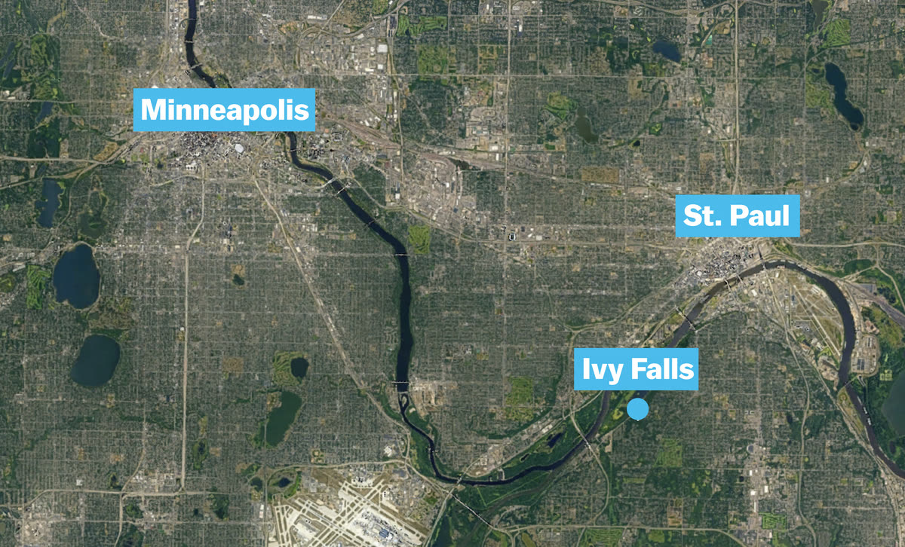
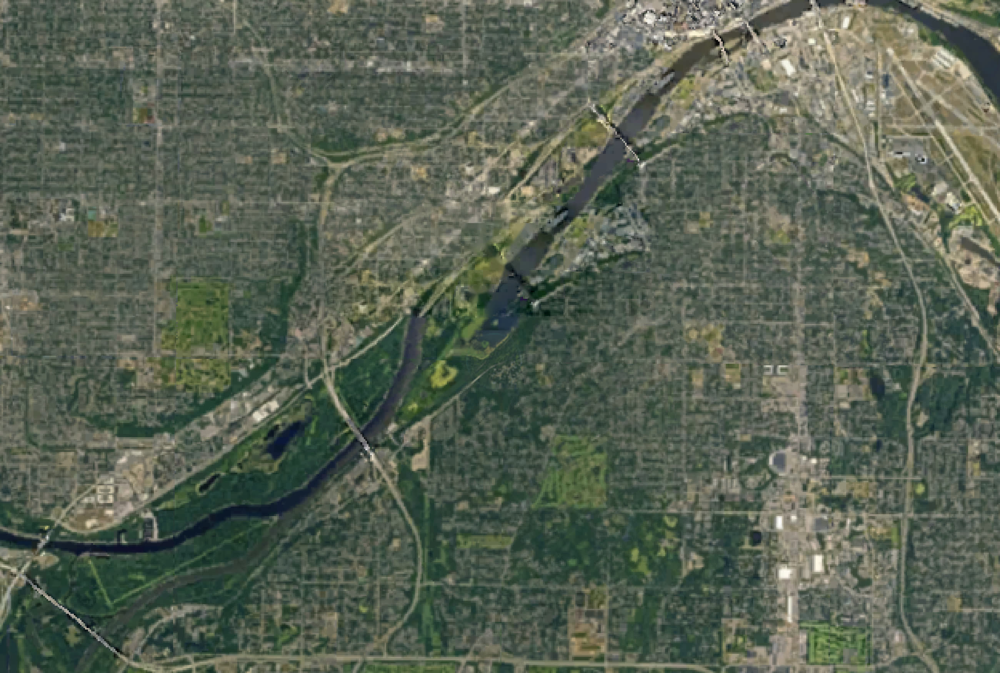
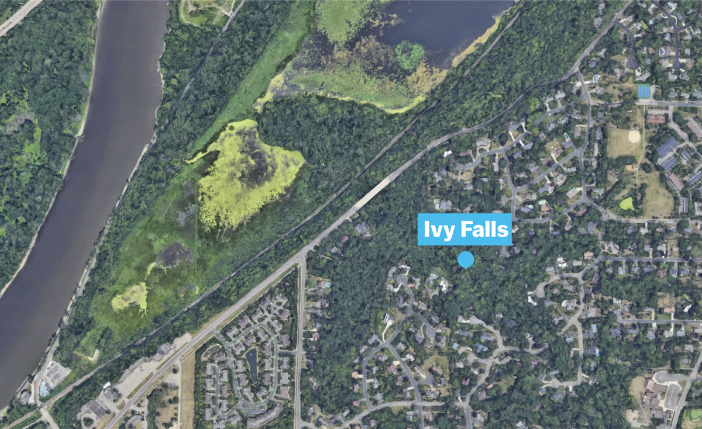
The first leg of the journey involves walking two-thirds of a mile along a train track sandwiched between the steep river bluffs and the floodplain forests of Lilydale Regional park. Upon reaching the trailhead, I and a friend assisting in videography, found the road to the parking lot blocked off due to high waters from the recent snow melt of Minnesota’s third snowiest winter on record. Traversing a marshy patch of reeds by way of a few conveniently placed wood planks, we reached the railroad tracks, which jutted above the flooded river flats.
The next stretch of the hike saw us walking through the often steep sides of the small wooded valley cut by the stream flowing down from the falls. The trek involves a few crossings of the creek that’s only about 8 feet wide, either by hopping across rocks above the water, or walking across the numerous fallen trees acting as makeshift bridges.
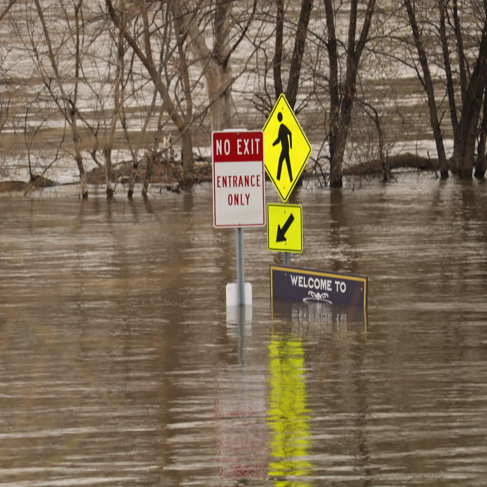
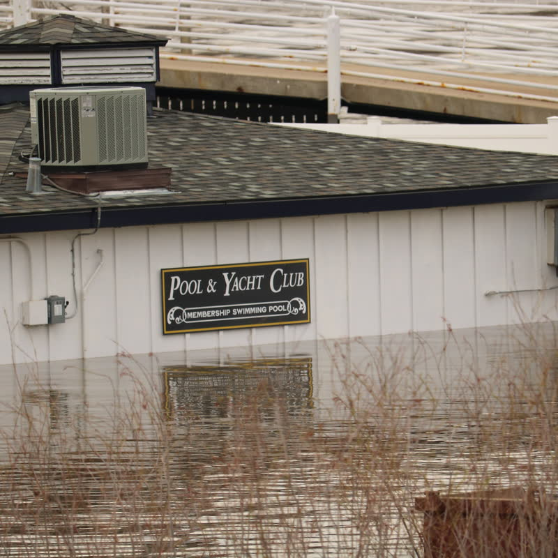
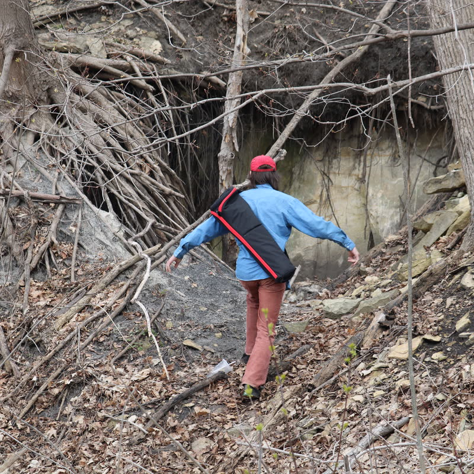
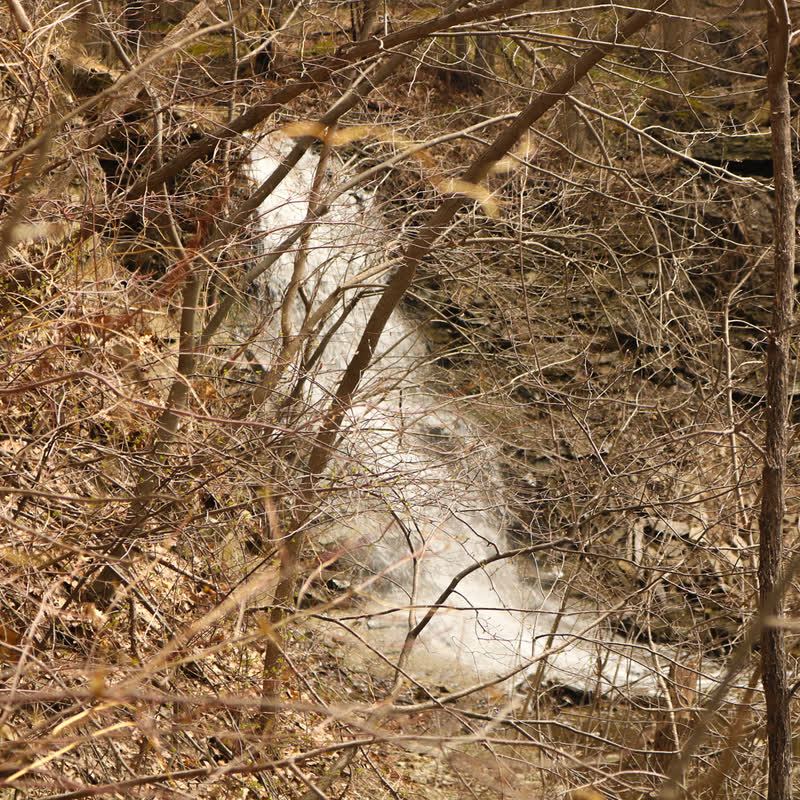
The tiered waterfall has two drops, of about 10 and 25 feet, flowing over shelves of shale before plunging to the stream bed below. The falls are nearly 100% spring-fed, according to Feinberg.
Happy Hollow Falls
The falls, which were once known as Happy Hollow Falls, were little-known among the general public even in the early 20th century, according to a 1917 news clipping from the St. Paul Pioneer Press.
Scan goes here. The key sentence gets a highlighter stroke as it scrolls into view.
Read the transcription
Transcription to come.
Despite the waterfall’s lack of widespread exposure, the South St. Paul Reporter reported in 1937 that the park was under consideration to become a state park, with two state legislators introducing bills to set aside the land for public use. Those efforts never came to fruition.
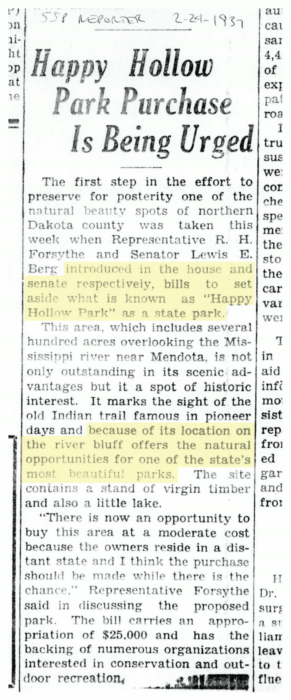
Read the transcription
Happy Hollow Park Purchase Is Being Urged
The first step in the effort to preserve for posterity one of the natural beauty spots of northern Dakota county was taken this week when Representative R. H. Forsythe and Senator Lewis E. Berg introduced in the house and senate respectively, bills to set aside what is known as “Happy Hollow Park” as a state park.
This area, which includes several hundred acres overlooking the Mississippi river near Mendota, is not only outstanding in its scenic advantages but it a spot of historic interest. It marks the sight of the old Indian trail famous in pioneer days and because of its location on the river bluff offers the natural opportunities for one of the state’s most beautiful parks. The site contains a stand of virgin timber and also a little lake.
“There is now an opportunity to buy this area at a moderate cost because the owners reside in a distant state and I think the purchase should be made while there is the chance,” Representative Forsythe said in discussing the proposed park. The bill carries an appropriation of $25,000 and has the backing of numerous organizations interested in conservation and outdoor recreation.
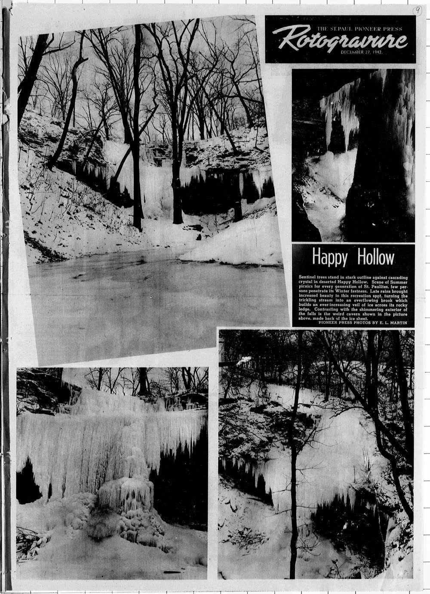
Happy Hollow
Sentinel trees stand in stark outline against cascading crystal in deserted Happy Hollow. Scene of Summer picnics for every generation of St. Paulites, few persons penetrate its Winter fastness. Late rains brought increased beauty to this recreation spot, turning the trickling stream into an overflowing brook which builds an ever-increasing veil of ice across its rocky ledge. Contrasting with the shimmering exterior of the falls is the weird cavern shown in the picture above, made back of the ice sheet.
Pioneer Press photos by E. L. Martin
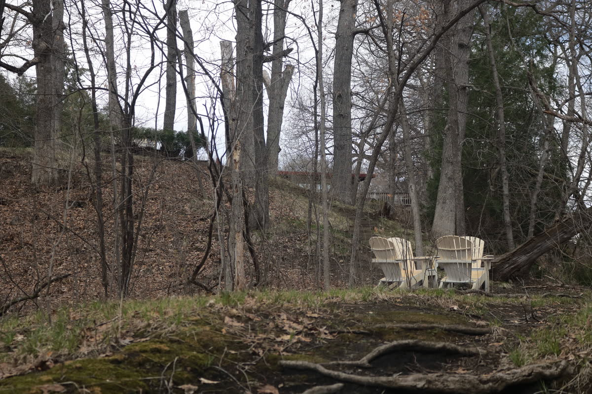
Ivy Falls now sits nestled in between the Mississippi and a residential neighborhood, surrounded by million-dollar house laden cul-de-sacs, according to data from Zillow. A locale once sought as a recreation area for many, now is seen by very few.